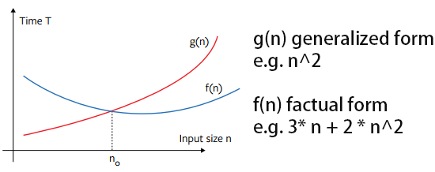
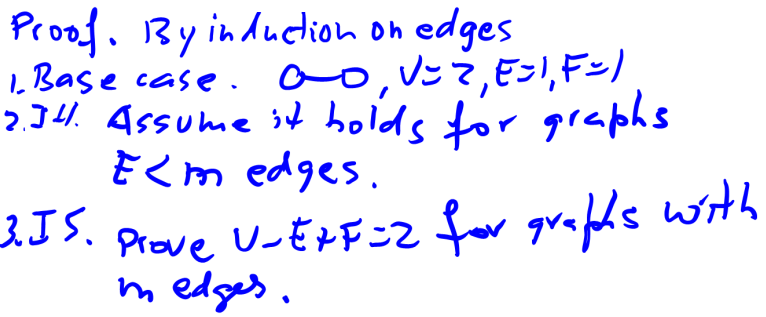
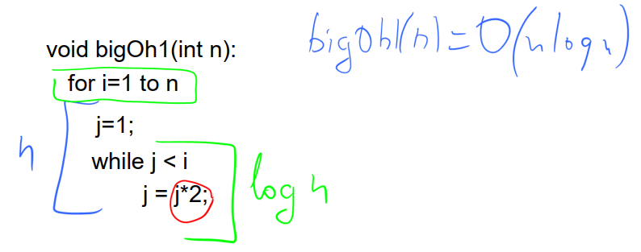
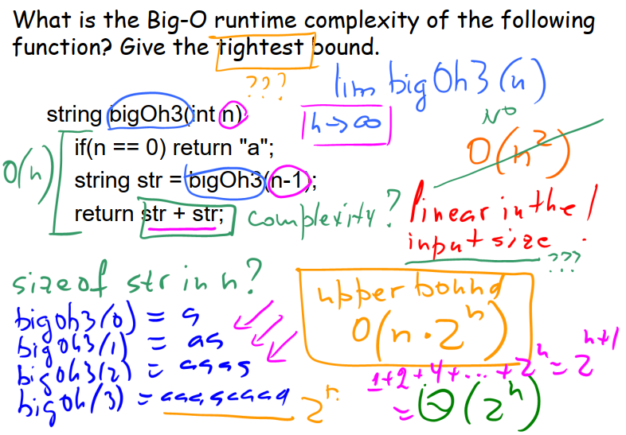
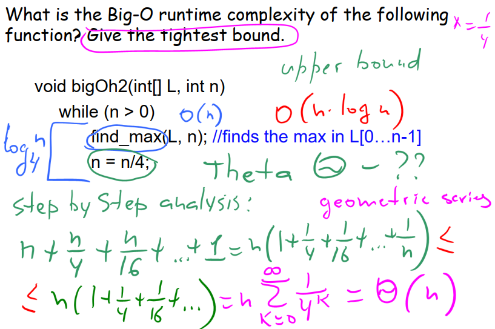

For any monotonic functions, f, g from the positive integers to the positive integers, we say f(n) = O(g(n)) or f(n) = Ω(g(n)) or f(n) = Θ(g(n))
Concepts
- T(n) counts the # of steps, where n is the input size.
- O big O, which c > 0 and real number , has , for all .
- Ω big Omega, which c > 0 and real number , has , for all .
- Θ big Theta, which > 0 and > 0 and real number , has , for all .

Theorems
- G = (V, E), the following statements are equivalent:

- G is a tree.
- Every two vertices of G are connected by a unique path
- G is connected and V = E + 1
- G is acyclic and V = E + 1
- G is acyclic and if any two non-adjacent vertices are joined by an edge, the resulting graph has exactly one cycle.
- In an undirected simple graph G = (V, E), there are at most edges. In short, by using the asymptotic notation, .
- three way to traversal a graph:
- depth-first-search
- breadth-first-search
- topological sort
- the result of topological sort is not unique
- If G is a connected planar graph with V vertices, E edges, and F faces, then V - E + F = 2
faces represent disjoint area.
 - In any simple connected planar graph with at least 3 vertices,
- A simple connected planar graph with at least 3 vertices has a vertex of degree 5 or less.
- [Coloring Planar Graph] every planar graph can be colored with at most six colors.
- A graph is bipartite if and only if it dose not contain an odd length cycle.
- A connected graph G is a Eulerian graph if and only if all vertices of G are of even degree
Review Q&A
- Mark the following assertions as TRUE or FALSE. No need to provide any justification.
- a.
- True. since and this is big O annotation, which requires when .
In the issue, , meets the requirements, so it is correct.
- True. since and this is big O annotation, which requires when .
- b.
- False. should use Ω
- c.
- False. should use O
- d.
- True.
- e.
- False. should use
- f.
- True. let , so we have
- g.
- True. let ,
so we have . not easy to compare. but we already knew log(n) < n.
So .
let , we will have .
f(n) = 1029B, g(n) = B. There exist many could meet .
- True. let ,
- h.
- False. u can see the head img. grow faster than . so left part bigger than right.
The statement is wrong, and should use
- False. u can see the head img. grow faster than . so left part bigger than right.
- i.
- False. will going to zero when n > 0. the left part will never beat the 101. so LHS is smaller or bigger than RHS when choose different c. Thus the statement is wrong.
- a.
- (T/F) Any function which is is also .
- True. Assume there is a f(n) >= c log(n).
and we also knew, log(n) > log(log(n)) in any suitation. so we have f(n) >= c log(n) > c * log(log(n)).
- True. Assume there is a f(n) >= c log(n).
- (T/F) If f(n) = Θ(g(n)) then g(n) = Θ(f(n))
- True. becasue f(n) = Θ(g(n)), we have . LHS multiplt => . RHS multiplt => .
In all, we have =>
- True. becasue f(n) = Θ(g(n)), we have . LHS multiplt => . RHS multiplt => .
- (T/F) If f(n) = Θ(g(n)) then f(n) = Ω(g(n)).
- True. becasue f(n) = Θ(g(n)), we have . LHS is what you need. so this is true.
- (T/F) If f(n) = Ω(g(n)) then .
- False prove it by contradiction.
e.g. f(n) = 2n, g(n) = 4n. when c = 0.25. f(n) >= c * g(n).
but , . so this statement is wrong.
- False prove it by contradiction.
- (T/F) BFS can be used to find the shortest path between any two nodes in a non-weighted graph.
- True. as the professor said. BFS find node in level order.
- (T/F) A DFS tree is never the same as a BFS tree.
- False. could be the same.
- (T/F) Algorithm A has a running time of and algorithm B has a running time of From this we conclude that A can never run faster than B on the same input.
- False. Big O annotation is just telling you the maximum time that your algorithm will cost. But when running in real life, the actual data could be easily handled.
- (T/F) Planar graph is a sparse graph.
- False. could be a dense graph.
- (T/F) Every DAG contains a vertex with no incoming edges.
- True. DAG (directed acyclic graph) cannot has a circle.
Exercise Q&A
Prove g(n) = Ω(f(n)) if and only if f(n) = O(g(n)).
- Solution To prove a theorem of the form A IF AND ONLY IF B, you first prove IF A THEN B, then you prove IF B THEN A, and that’s enough to complete the proof.
Proof
- $A \rightrightarrows B$
g(n) = Ω(f(n)), means g(n) >= c * f(n), c > 0
we multiply 1 / c on both side, and we have >= f(n) which equals to
f(n) <= , b > 0 , so we can say f(n) = O(g(n)). - $B \leftleftarrows A$
f(n) = O(g(n)), means f(n) <= c * g(n), c > 0
we multiply 1 / c on both side, and we have <= g(n) which equals to
g(n) >= , b > 0 , so we can say g(n) = Ω(f(n)).
- $A \rightrightarrows B$
- Solution To prove a theorem of the form A IF AND ONLY IF B, you first prove IF A THEN B, then you prove IF B THEN A, and that’s enough to complete the proof.
Prove or disprove f(n) = O(g(n)) implies .
- Solution prove it by contradiction.
e.g. f(n) = 2n, g(n) = n. when c = 4. f(n) <= c * g(n).
but , . so this statement is wrong.
- Solution prove it by contradiction.
Arrange the following functions
in increasing order of growth rate, with g(n) following f(n) in your list if and only if f(n) = O(g(n)).
- Solution we can follow this order
$O(1) <= O(log(n)) <= O((log(n))^C) <= O(C^{log(n)}) <= O(n) <= O(n \cdot log(n)) <= O(n^C) <= O((log(n))!) <= O(n^{log(n)}) <= O(C^n)$
And we can simply some of them in first place.
,
So , finally, we have
$nlog(n),\, n^2,\, n^{log(n)},\, nlog(log(n)),\, n,\, (log(n))^2,\, n^{\sqrt{2}}$
$O(1) \Rightarrow None$
$O(log(n)) \Rightarrow None$
$O((log(n))^C) \Rightarrow ⑥$
$O(C^{log(n)}) \Rightarrow None$
$O(n) \Rightarrow ⑤$
$O(n \cdot log(n)) \Rightarrow ①④ since \, n > log(n) \Rightarrow ④①$
$O(n^C) \Rightarrow ②⑦ since \, \sqrt(2) < 2 \, and \, log(n)\, grow \,slower \,than \,exponential \,func $
$\quad especially \,when \,a > 1 \, so, ⑦②$
$O((log(n))!) \Rightarrow None$
$O(n^{log(n)}) \Rightarrow ③$
$O(C^n) \Rightarrow None$
the answers is: ⑥<⑤<④<①<⑦<②<③
$(log(n))^2,\, 2^{log(n)},\, nlog(log(n)),\, log(n^n),\, n^{\sqrt{2}}, \, n^2,\, n^{log(n)}$
- Solution we can follow this order
Arrange the following functions
in increasing order of growth rate with g(n) following f(n) in your list if and only if f(n) = O(g(n)).
- Solution we can follow this order
$O(1) <= O(log(n)) <= O((log(n))^C) <= O(C^{log(n)}) <= O(n) <= O(n \cdot log(n)) <= O(n^C) <= O((log(n))!) <= O(n^{log(n)}) <= O(C^n)$
And we can simply some of them in first place.
,
,
So , finally, we have
$n^2, \, \sqrt{log(n)},\, n^{log(log(n))},\, (\sqrt{2})^{log(n)},\, 2^{\sqrt{2log(n)}},\, 2, \, (log(n))!$
$O(1) \Rightarrow ⑥$
$O(log(n)) \Rightarrow None$
$O((log(n))^C) \Rightarrow ②$
$O(C^{log(n)}) \Rightarrow ④⑤ \quad (\sqrt{2})^{log(n)} = 2^{log(n) / 2} $
$\quad \,we \, can \, just \, compare \, log(n) / 2 \, v.s. \sqrt{2 \cdot log(n)} \, so, ⑤④$
$O(n) \Rightarrow None$
$O(n \cdot log(n)) \Rightarrow None$
$O(n^C) \Rightarrow ①$
$O((log(n))!) \Rightarrow ⑦$
$O(n^{log(n)}) \Rightarrow ③$
$O(C^n) \Rightarrow None$
the answers is: ⑥<②<⑤<④<①<⑦<③
$(log(n))^2,\, 2^{log(n)},\, nlog(log(n)),\, log(n^n),\, n^{\sqrt{2}}, \, n^2,\, n^{log(n)}$
- Solution we can follow this order
What is the Big-O runtime complexity of the following function?
1
2
3
4
5void bigOh1 (int n):
for i=1 to n
j=1;
while j < n
j = j*2;- Solution

- Solution
What is the Big-O runtime complexity of the following function?
1
2
3
4string bigOh3 (int n):
if(n == 0) return "a";
string str = bigOh3(n-1);
return str + str;- Solution

- Solution
What is the Big-Theta runtime complexity of the following function? Here find_max finds the maximum element in the array L[0], L[1], …, L[n - 1].
1
2
3
4void bigOh2 (int[] L, int n):
while (n > 0)
find_max(L, n);
n = n/4;- Solution

- Solution
The complete graph on n vertices, denoted , is a simple graph in which there is an edge between every pair of distinct vertices. What is the height of the DFS tree for the complete graph ? What is the height of the BFS tree for the complete graph ?
- Solution
We are interested in finding a simple path in a directed acyclic graph that visits all vertices once and only once. Design a linear time algorithm to determine if there is such a path in a given DAG.
- Solution
Prove that a complete graph is not a planar graph.
- Solution
Prove that a complete bipartite graph is not a planar graph.
- Solution
In a connected bipartite graph, is the bipartition unique? Justify your answer.
- Solution
Given a directed graph G = (V, E) and a particular node v ∈ V, design a linear time algorithm to determine whether v is in a triangle of edges (a cycle of length 3).
- Solution
Design a linear time algorithm which, given an undirected graph G = (V, E) and a particular edge e ∈ E, determines whether G has a cycle containing e.
- Solution
Given an undirected graph G = (V, E), prove that S is an independent set if and only if V - S is a vertex cover
- Solution
不建议Ctrl+CV转载，多看看得了。(Not recommend you to reprint this article, come over to my site more frequently is enough.)